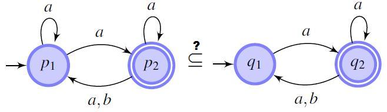

A collection of recent research results on automata language inclusion testing
The automata language inclusion problem is important in many application domains, e.g., formal verification. Many verification problems can be formulated as a language inclusion problem. For example, one may describe the actual behaviors of an implementation in an automaton A and all of the behaviors permitted by the specification in another automaton B. Then, the problem of whether the implementation meets the specification is equivalent to the problem L(A)⊆ L(B).
Since we consider general nondeterministic automata, language inclusion/equivalence checking is computationally hard (PSPACE-complete for word automata and EXPTIME-complete for trees). Still, fairly large instances can be solved with the right techniques. The goal is to make similar progress on solving PSPACE-hard automata problems, as the progress made by SAT-solvers on NP-hard logic problems.

Slides of an overview talk on language inclusion and automata minimization.
In program verification, language inclusion of Buchi Automata, Finite Automata and Tree Automata are most studied. Below we list research projects on these topics.